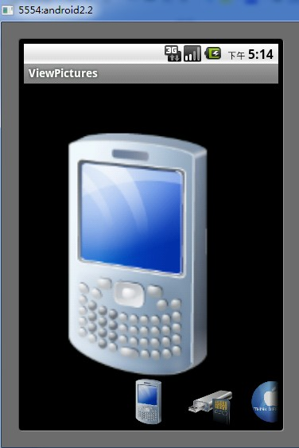
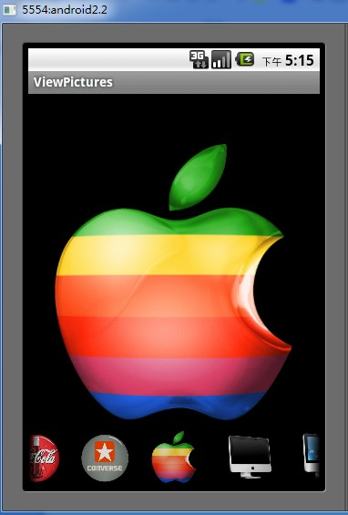
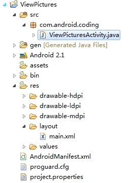

结合ImageSwithcer和Gallery控件制作一个图片浏览
导读：
ImageSwitcher是Android中控制图片展示效果的一个控件，如：幻灯片效果；Gallery俗称画廊控件，是android中实现拖动图片移动一个控件，在项目开发中经常用到该控件。在网上可以看到很多类似这样的例子和效果，一些做得可能还更好。跟网上那些例子不同的是，在这里用了稍微多一点的代码注释讲解ImageSwitch和Gallery的结合使用，作为抛砖引玉的作用。可能有些地方说得不太详细，请多多指教。话不多说，上个运行截图先。
运行截图：
下部分的是Gallery控件，实现了无限循环。


项目结构：

界面布局：
采用绝对布局，上部分是ImageSwitcher控件，下部分是Gallery控件。
代码如下：
<?xml version="1.0" encoding="utf-8"?><!-- 相对布局 -->
<RelativeLayout xmlns:android="http://schemas.android.com/apk/res/android
android:layout_width="fill_parent
android:layout_height="fill_parent" >
<!-- 宽和高填满父控件 -->
<ImageSwitcher
android:id="@+id/switcher
android:layout_width="fill_parent
android:layout_height="fill_parent" />
<!-- 宽填满父控件，高为60像素，间隔为16像素，与父控件的左侧和底部对齐 -->
<Gallery
android:id="@+id/gallery
android:layout_width="fill_parent
android:layout_height="60px
android:layout_alignParentBottom="true
android:layout_alignParentLeft="true
android:spacing="16px" />
</RelativeLayout>
ViewPicturesActivity.
import android.app.Activity;import android.content.Context;
import android.os.Bundle;
import android.view.View;
import android.view.ViewGroup;
import android.widget.AdapterView;
import android.widget.AdapterView.OnItemSelectedListener;
import android.widget.BaseAdapter;
import android.widget.Gallery;
import android.widget.Gallery.LayoutParams;
import android.widget.ViewSwitcher.ViewFactory;
import android.widget.ImageSwitcher;
import android.widget.ImageView;
public class ViewPicturesActivity extends Activity {
ImageSwitcher imageSwitcher; // 声明ImageSwitcher对象，图片显示区域
Gallery gallery; // 声明Gallery对象，图片列表索引
int imagePosition; // 标记图片数组下标，用于循环显示
// 声明图片整型数组
private int[] images = { R.drawable.image1, R.drawable.image2,
R.drawable.image3, R.drawable.image4, R.drawable.image5,
R.drawable.image6, R.drawable.image7, R.drawable.image8,
R.drawable.image9, R.drawable.image10, R.drawable.image11,
R.drawable.image12, R.drawable.image13, R.drawable.image14,
R.drawable.image15, R.drawable.image16, R.drawable.image17 };
@Override
public void onCreate(Bundle savedInstanceState) {
super.onCreate(savedInstanceState);
setContentView(R.layout.main);
// 通过控件的ID获得imageSwitcher的对象
imageSwitcher = (ImageSwitcher) findViewById(R.id.switcher);
// 设置自定义的图片显示工厂类
imageSwitcher.setFactory(new MyViewFactory(this));
// 通过控件的ID获得gallery的对象
gallery = (Gallery) findViewById(R.id.gallery);
// 设置自定义的图片适配器
gallery.setAdapter(new ImageAdapter(this));
// 实现被选中的事件监听器
gallery.setOnItemSelectedListener(new OnItemSelectedListener() {
@Override
public void onItemSelected(AdapterView<?> parent, View view,
int position, long id) {
// 通过求余数，循环显示图片
imageSwitcher
.setImageResource(images[position % images.length]);
}
@Override
public void onNothingSelected(AdapterView<?> parent) {
}
});
}
// 自定义图片适配器，继承BaseAdapter
class ImageAdapter extends BaseAdapter {
private Context context; // 定义上下文
// 参数为上下文的构造方法
public ImageAdapter(Context context) {
this.context = context;
}
// 得到图片的大小
@Override
public int getCount() { // 设置为整型的最大数
return Integer.MAX_VALUE;
}
// 得到指定图片的对象
@Override
public Object getItem(int position) {
return null;
}
// 得到指定图片的对象的ID
@Override
public long getItemId(int position) {
return 0;
}
// 显示图标列表
@Override
public View getView(int position, View convertView, ViewGroup parent) {
ImageView iv = new ImageView(context); // 创建ImageView对象
iv.setImageResource(images[position % images.length]); // 设置循环显示图片
iv.setAdjustViewBounds(true); // 图片自动调整显示
// 设置图片的宽和高
iv.setLayoutParams(new Gallery.LayoutParams(
LayoutParams.WRAP_CONTENT, LayoutParams.WRAP_CONTENT));
return iv; // 返回ImageView对象
}
}
// 自定义图片显示工厂类，继承ViewFactory
class MyViewFactory implements ViewFactory {
private Context context; // 定义上下文
// 参数为上下文的构造方法
public MyViewFactory(Context context) {
this.context = context;
}
// 显示图标区域
@Override
public View makeView() {
ImageView iv = new ImageView(context); // 创建ImageView对象
iv.setScaleType(ImageView.ScaleType.FIT_CENTER); // 图片自动居中显示
// 设置图片的宽和高
iv.setLayoutParams(new ImageSwitcher.LayoutParams(
LayoutParams.FILL_PARENT, LayoutParams.FILL_PARENT));
return iv; // 返回ImageView对象
}
}
}